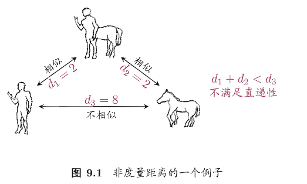
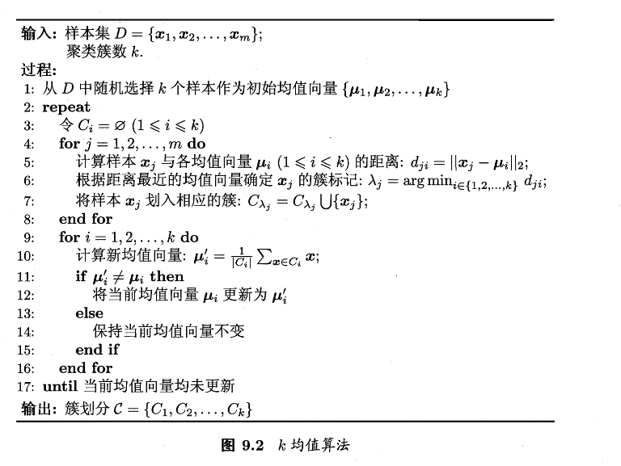
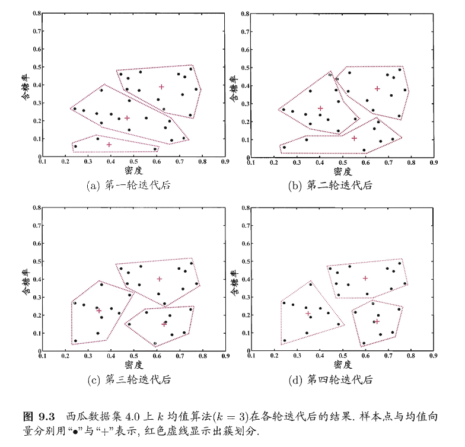
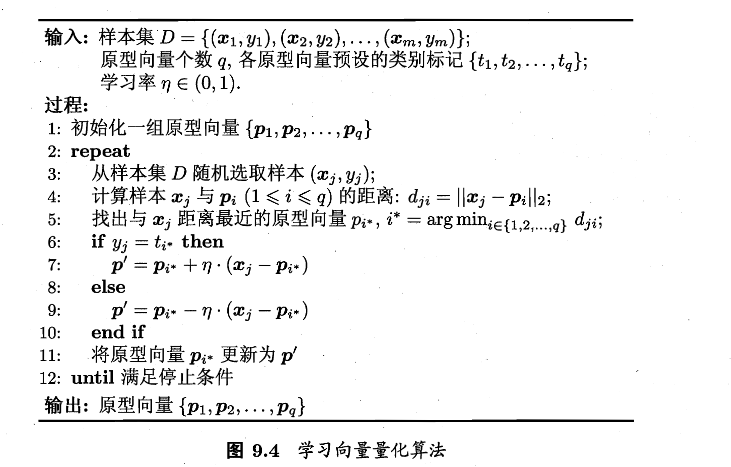
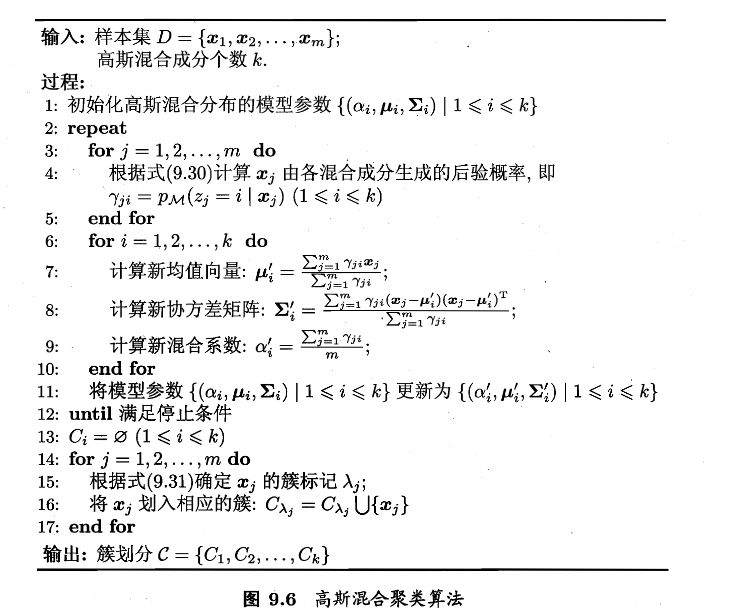

第九章 聚类
聚类是无监督学习中的一类方法，具体是指：把一堆“没有标签”的数据，按相似性自动分成若干组/簇。同一组/簇里的样本彼此相似，不同组/簇之间的差异更大
性能度量
首先介绍聚类算法涉及的性能度量方案。
聚类性能度量也成为聚类“有效性指标”，用于评估聚类结果的好坏；如果已经明确最终要使用的度量，也可以将其直接作为聚类过程的优化目标
好的聚类直观上应“物以类聚”：簇内相似度高、簇间相似度低。于是可以大致划分出两类性能：
- 外部指标：将聚类结果与某个“参考模型”比较
- 内部指标：不借助参考模型，直接考察聚类结果本身
外部指标：基于样本对的一致/不一致计数
给定数据集 \(D=\{x_1,x_2,\dots,x_m\}\) 假定通过聚类给出的簇划分为 \(\mathcal{C}=\{C_1,C_2,\dots,C_m\}\)，而参考模型给出的簇划分为 \(\mathcal{C}^*=\{C_1^*,C_2^*,\dots,C_m^*\}\)。令 \(\lambda\) 表示 \(\mathcal{C}\) 的簇标记向量；\(\lambda^*\) 表示 \(\mathcal{C}^*\) 对应的簇标记向量。
我们将样本两两配对 (仅取 \(i<j\))，可以定义四类样本对集合及其大小：
由于每个样本对 \((x_i,x_j)\) 只能落在四类之一，所以有 \(a+b+c+d=\dfrac{m(m-1)}{2}\) 成立
接下来我们根据式(9.1)-(9.4)可以得到常用的外部指标，很好理解
Jaccard系数（JC）
FM指数
Rand指数
上述外部指标的取值都在 \([0,1]\) ，越大越好
内部指标：基于簇内紧凑与簇间分离
考虑聚类划分 \(\mathcal{C}=\{C_1,C_2,\dots,C_k\}\)，我们定义
簇 \(C\) 的簇内平均距离
\(\text{dist}(\cdot,\cdot)\) 表示两个样本之间的距离
簇 \(C\) 的簇内直径(最大距离)
两簇样本最近样本距离
两簇中心点距离
\(\mu\) 表示簇 \(C\) 的中心点（均值向量）为 \(\mu=\dfrac{1}{|C|}\sum_{1\le i\le|C|}x_i\)
接下来基于式 (9.8)-(9.11)，可以得到常用内部指标如下：
DB指数
对每个簇 \(i\)，去找一个最糟糕的邻居簇，使得 \(\dfrac{两簇的簇内样本到簇中心平均距离}{两簇中心距离}\) 最大；最后求平均
可见DBI越小，簇内越紧凑、簇间越分离
Dunn指数
分子：簇间最小距离，即最近的两簇之间最接近的有多近
分母：最大簇直径，即最松散的簇有多散
接下来再取全局最小，即只要存在一对簇特别近，或存在一个簇特别散，指标就会被拉低。可见DI越大，效果越好
距离计算
刚刚引入了一个函数 \(\text{dist}(\cdot,\cdot)\) 表示两样本之间的距离，但是我们并没有解决这个函数的计算，接下来就是关于这个函数的推导
Note
函数 \(\text{dist}(\cdot,\cdot)\) 应当满足以下基本性质
给定样本 \(\boldsymbol{x_i}=(x_{i1};x_{i2};\dots;x_{in})\) ,\(\boldsymbol{x_j}=(x_{j1};x_{j2};\dots;x_{jn})\)
比较常用的是 闵可夫斯基距离
当 \(p=2\) 时，可以得到 欧氏距离
当 \(p=1\) 时，可以得到 曼哈顿距离
属性类型与距离
属性又一般分为连续属性和离散属性。前者在定义域上有无穷多个可能的取值，后者在定义域上取值有限。
很明显，连续属性可以简单的计算出距离；
而定义域为{1，2，3}这种的离散属性相对能直接计算属性值的距离，这种属性称为有序属性
但定义域为 \(\{飞机，火车，轮船\}\)，不太适合直接计算属性值的距离，这种属性称为无序属性
VDM
明显可知，闵可夫斯基距离只能适用于连续属性和有序属性。那么如何评估无序属性的距离呢，书中介绍了 VDM 方法，如下：
设：
- \(m_{u,a}\) 表示在属性 \(u\) 上取值为 \(a\) 的样本数，
- \(m_{u,a,i}\) 表示在第 \(i\) 个样本簇中在属性 \(u\) 上取值为 \(a\) 的样本数，
- \(k\) 为样本簇数
则属性 \(u\) 上有两个离散值 \(a\) 与 \(b\) 之间的VDM距离为
意味着比较两个取值在各类别中的分布差异
多种距离变种
混合属性距离
于是我们可以将闵可夫斯基距离和VDM结合，处理混合属性。如下假定我们有
- \(n_c\) 个有序属性
- \(n-n_c\) 个无序属性
加权距离
当属性的重要性不同的时候，我们可以为每个距离加上一定的权重
距离与相似
一般来说，属性之间距离越大，相似度就越小。但是用于相似度度量的距离未必一定满足距离度量的基本性质，尤其是式(9.17)直递性，如下例子

人与人马相似，马与人马相似，但是人与人马完全不相似；这样的距离称为“非度量距离”
此外，本节的距离计算式都是事先定义好的，但是不少的现实任务中，有必要基于数据样本来确定合适的距离计算式，于是有 “距离度量学习” 来实现这一步骤
原型聚类
用一组“原型”去刻画簇结构。其本质为：把样本分组，让组内相似、组间不同。其核心假设是：每个簇可以用一个（或几个）代表物来概括，这个代表物就叫做原型。
按照原型的表示方法，书中介绍了三种代表方法：
- 一个向量（例如簇均值）\(\rightarrow\) k-means
- 一个带类别标签的向量 \(\rightarrow\) LVQ
- 一套概率模型参数(均值/协方差/混合权重) \(\rightarrow\) GMM
这样的话就把“找簇”变为了“找原型”，同时也将很多聚类算法统一为一种哲学：初始化原型 \(\rightarrow\) 反复：用原型解释数据、再用数据修正原型 \(\rightarrow\) 直到不再变化、
k-means
在k均值算法中，我们希望每个簇内部点都围着某个中心转，而且越紧凑越好。用数学语言表述如下
给定样本集 \(D=\{x_1,x_2,\dots,x_m\}\) ,”k-均值“ 算法针对聚类所得簇划分 \(\mathcal{C}=\{C_1,C_2,\dots,C_k\}\) ，\(\mu_i=\dfrac{1}{|C_i|}\sum_{x\in C_i}x\) 表示簇 \(C_i\) 的均值向量，于是有
这个公式有两层：
- 内层：一个簇里面每个点到中心的距离的平方
- 外层：把所有簇的这种“离散程度“加起来
不过式(9.24)中有两个变量需要确定：
- 每个点属于哪个簇（离散的组合问题）
- 每个簇中心在哪（连续变量）
想要找到它的最优解需要考察样本集 \(D\) 所有可能的簇划分，属于NP难问题。于是k-means采用了贪心的思路，如下
贪心迭代
k-means的经典思路为：把难问题拆成两步简单问题，交替做：
- 分配步（固定中心，优化划分）：每个点去离它最近的 \(\mu_i\)
- 更新步（固定划分，优化中心）：每个簇的最优中心就是均值
将这两步轮流操作，每次只优化一部分变量，直到目标停在一个局部最优/稳定点，如下算法

书中给出了一个训练过程图，如下

LVQ
k-means是无监督的，它不关心标签的好坏，只在意几何上的紧凑与否。这样可能导致分类出现错误，于是提出了LVQ想法，如下
仍然用原型向量代表区域，但更新原型时利用标签
- 若为同类：把原型拉向样本（强化这类的代表）
- 若为异类：把原型推离样本（避免混淆）
数学语言表达如下：给定样本 \(D = \{(x_1, y_1), (x_2, y_2), \ldots, (x_m, y_m)\}\)，每个样本 \(x_j\) 是由 \(n\) 个属性描述的特征向量 \((x_{j1}; x_{j2}; \ldots; x_{jn}),y_j \in \mathcal{Y}\) 是样本 \(x_j\) 的类别标记。LVQ的目标是学得一组 \(n\) 维原型向量 \(\{p_1, p_2, \ldots, p_q\}\)，每个原型向量代表一个聚类簇，簇标记 \(t_i \in \mathcal{Y}\)
实际上就是向样本的方向走一段距离，由 \(\eta\) 控制走多远
由于 \(0<\eta<1\) ,所以 \(1-\eta<1\)，更新后距离缩小。这意味着同类样本会将原型吸引过来
同理，遇到异类情况，距离按照 \(1+\eta\) 放大，让原型离开这类样本
算法：一次只看一个样本的在线学习
每轮：
- 随机抽一个样本 \((x_i,y_i)\)
- 找到离它最近的原型 \(p_i\)
- 如果 \(y_i=t_{i^*}\) (标签一致）就靠近，否则远离

我们得到输出的原型向量后，就可以做一种”最近原型分类/聚类“，因为此时任意点 \(x\) 都归到最近的原型对应的簇中。
这会将空间切成很多最近点区域，称之为 Voronoi 区域，数学表达如下
区域 \(R_i\) 里的点到 \(p_i\) 的距离不大于到任何其它原型的距离。如下图所示，每个颜色中的点都离他所属颜色的黑点最近

GMM
继续回到k-means，它隐含了一个假设：簇大致是凸/球形的，用均值代表。
但现实中，可能有这些问题：簇的不同方向方差可能不同；簇之间可能会重叠；你不希望把点直接划分给某个簇，而是想要属于某簇的概率。
这时就映入了概率生成模型：高斯混合模型
单高斯分布
对 \(n\) 维样本空间 \(\mathcal{X}\) 中的随机向量 \(x\)，若 \(x\) 服从高斯分布，\(\mu\) 是 \(n\) 维均值向量，\(\sum\) 是 \(n\times n\) 的协方差矩阵（形状与方向），其 概率密度函数 为
接下来，我们 计算混合分布：
取 \(\alpha_i\) 为混合系数，它满足 \(\alpha_i>0,\sum_i{\alpha_i}=1\)。对于高斯分布 \(x_i\sim N(\mu_i,\Sigma_i)\) ，我们先按 \(\alpha\) 选一个成分 \(i\) ,再从高斯分布 \(N(\mu_i,\Sigma_i)\) 中采样出来 \(x\) ，可以得到 高斯混合分布 为 $$ p_{\mathcal{M}}(x)=\sum_{i=1}^{k}\alpha_i\cdot p(x\mid\mu_i,\Sigma_i) \tag{9.29} $$ 于是我们可以来 计算后验概率，即这个点来自哪个成分的概率：
引入隐变量 \(z_j\) 表示第 \(j\) 个样本来自哪个成分，给定 \(x_j\) ，它属于第 \(i\) 个成分的后验概率如下式，记作 \(\gamma_{ji}\)
分子：该成分的先验概率 * 在该成分下生成这个点的可能性
分母：对所有成分做归一化
接下来进一步扩展，我们加入簇标签：
当高斯混合分布(9.29)已知，高斯混合聚类把样本集 \(D\) 划分成 \(k\) 个簇 \(\mathcal{C}=\{C_1,C_2,\dots,C_k\}\) ，每个样本 \(x_j\) 的簇标记 \(\lambda_i\) 按照下式确定： $$ \lambda_j=\arg\max_{i\in{1,2,\dots,k}}\gamma_{ji}\tag{9.31} $$ 计算
我们完成了一系列定义内容，接下来就是计算了，给定数据集 \(D\) ，模型参数是 \(\{(\alpha_i,\mu_i,\Sigma_i)\}\)。我们希望“模型最能解释数据”，也就是最大化似然（等价最大化对数似然） $$ \begin{align} LL(D) &= \ln \left( \prod_{j=1}^{m} p_{\mathcal{M}}(x_j) \right) \ &= \sum_{j=1}^{m} \ln \left( \sum_{i=1}^{k} \alpha_i \cdot p(x_j \mid \mu_i, \Sigma_i) \right), \tag{9.32} \end{align} $$ 采用7.6中介绍的 EM 算法(E+M交替计算，迭代出优化值)，详细过程如下：
若参数 \(\{(\alpha_i,\mu_i,\Sigma_i)\mid1\le i\le k\}\) 可以使式(9.32)最大化，则由 \(\dfrac{\partial LL(D)}{\partial\mu_i}=0\) 有 $$ \sum_{j=1}^{m} \frac{ \alpha_i \, p(x_j \mid \mu_i, \Sigma_i) }{ \sum_{l=1}^{k} \alpha_l \, p(x_j \mid \mu_l, \Sigma_l) } (x_j - \mu_i) = 0 \tag{9.33} $$ 接下来把 \(\gamma_{ji}\) (9.30)带入进来，得到有 $$ \mu_i = \frac{ \sum_{j=1}^{m} \gamma_{ji} x_j }{ \sum_{j=1}^{m} \gamma_{ji} }\tag{9.34} $$
每个点按“属于成分i的概率”当权重求平均，比较更柔和一些
同样的，对于协方差，我们让 \(\dfrac{\partial LL(D)}{\partial \Sigma_i}=0\) 可得 $$ \Sigma_i = \frac{\sum_{j=1}^{m} \gamma_{ji} (x_j - \mu_i)(x_j - \mu_i)^{\mathrm T}}{\sum_{j=1}^{m} \gamma_{ji}} \tag{9.35} $$
也就是责任度加权的“离均值散布程度”
而对于混合系数 \(\alpha_i\) ，除了要最大化 \(LL(D)\) ，我们还需要满足一些条件：\(\alpha_i\ge0,\sum_{i=1}^{k}\alpha_i=1\)。于是引入拉格朗日： $$ LL(D)+\lambda\left(\sum_{i=1}^k\alpha_i-1\right)\tag{9.36} $$ 接下来对 \(\alpha_i\) 求导，得到条件如下 $$ \sum_{j=1}^{m} \frac{p(x_j \mid \mu_i, \Sigma_i)}{\sum_{l=1}^{k} \alpha_l\, p(x_j \mid \mu_l, \Sigma_l)} + \lambda = 0\tag{9.37} $$ 整理后可以得到一个很优雅的式子 $$ \alpha_i=\dfrac{1}{m}\sum_{j=1}^{m}\gamma_{ji}\tag{9.38} $$
即成分 \(i\) 的权重就是它对所有点“平均负责多少”
